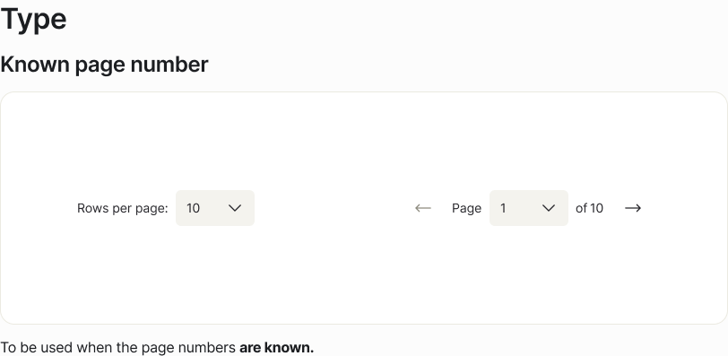
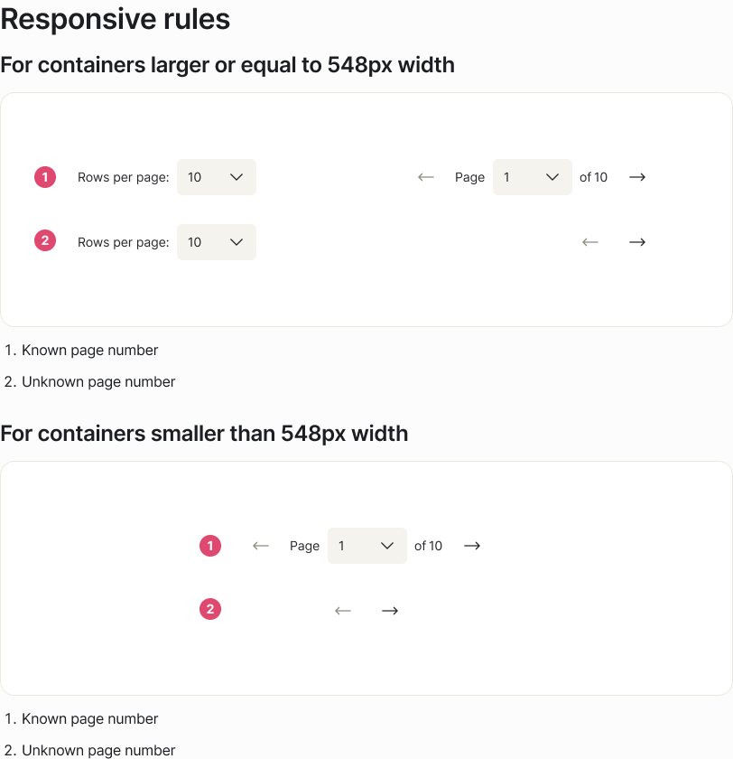
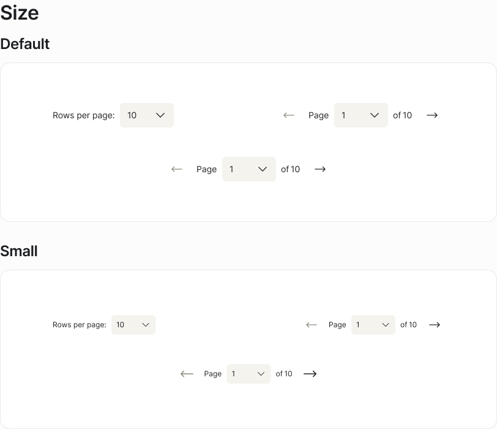
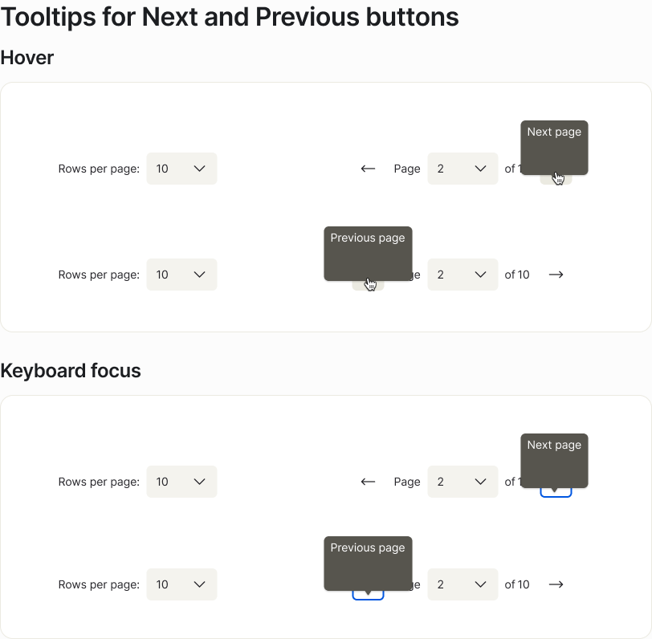

See also: props.md · examples.md · tokens.md · accessibility.md · Pagination-figma.md
↳ Pagination examples Figma page with ✅ Do — / ❌ Don't — card frames exists; the Figma examples page documents behavioural variants only (Type, Responsive, Size, Tooltips) — tracked as GAP-014 in Pagination-audit.md. The body below transcribes the published Oxygen docs page (oxygen.8x8.com/components/pagination/usage, fetched 2026-05-13) verbatim where the page asserts something, carries forward the descriptive variants from the prior figma-extract-usage run as the Behaviour section, and derives Do/Don't pairs from the docs page's intent + Figma behavioural variants cross-validated against props.md, examples.md, accessibility.md, and Pagination-figma.md.
Pagination lets users move through a large dataset that has been split across multiple pages. It is the canonical navigation control for paginated lists and data tables in 8x8 product surfaces — anywhere the result set is too big for a single screen but small enough that loading it all at once is wasteful or visually overwhelming. The component renders a horizontal control with three logical regions: a rows-per-page selector on the left, page navigation (previous · current page · count · next) on the right, and a compact mode that drops the rows-per-page region below 548 px container width.
The Figma anatomy (Pagination-figma.md:48) and the published docs anatomy (examples.md:76) compose as follows:
Rows per page slot. Value comes from translations.rowsPerPage.Select sub-component bound to the array passed via rowsPerPageOptions. Width is hardcoded — 88 px at default size, 72 px at small size. The whole slot is hidden when rowsPerPageOptions is omitted and is always hidden below the 548 px breakpoint.arrow-left-long) with a tooltip showing translations.prevPage on hover and on keyboard focus. Disabled visually + programmatically when canGoBack === false. Padding varies with size and breakpoint.Select sub-component listing every available page; the user can jump directly. The preceding "Page" label is localised; value comes from translations.translations.numberOfPages interpolated against the numberOfPages prop.arrow-right-long, tooltip from translations.nextPage, disabled when canGoNext === false.A focus ring is not modelled in the Figma component variant set (GAP-010) but is required by WCAG 2.4.7 for every interactive control — keep the platform default.
Source: Pagination-figma.md:48-76 · props.md:68-81 · examples.md:76-83.
Verbatim from the docs page: "Pagination is a component used to navigate through a large set of data divided into multiple pages."
A single Oxygen package, @8x8/oxygen-pagination, exports one component plus a state hook (props.md:62):
| Export | Use for | Key props / signature |
|---|---|---|
Pagination |
The visible control — renders the rows-per-page selector, prev / next buttons, page selector, and page count. | canGoBack, canGoNext, numberOfPages, pageNumber, rowsPerPage, onPaginationChange, translations, optional rowsPerPageOptions, size, isDisabled |
usePagination |
State derivation hook. Computes canGoBack, canGoNext, and numberOfPages from a PaginationState + totalRecords. Always used outside the <Pagination> element. |
usePagination(pagination, totalRecords) → { canGoBack, canGoNext, numberOfPages, pageNumber, rowsPerPage } |
PaginationState |
The state shape held by the consumer's useState. |
{ pageNumber: number; rowsPerPage: number } |
Verbatim from the docs page (Behavior): "The component enables users to interact through navigation controls featuring previous/next buttons, adjustable row display options, and page location selection."
The Figma ↳ Pagination examples page (extracted 2026-05-01) documents four behavioural variants. They are not Do/Don't card pairs — they are descriptive renderings of how the component changes shape under different prop combinations and container widths.

Known page number — "To be used when the page numbers are known." (verbatim Figma caption). Shows the full pagination bar with rows-per-page dropdown, previous/next buttons, page selector, and the "of N pages" count.
Unknown page number — "To be used when the page numbers are unknown." (verbatim Figma caption). The "of N pages" count is hidden; the page selector still works but no total is shown.
Without rows per page — "Pagination can be used without the control of the number of rows per page." (verbatim Figma caption). Two sub-variants: with and without the page count. Omit rowsPerPageOptions to suppress the entire rows-per-page slot.

Containers ≥ 548 px wide — full layout. Rows-per-page section on the left, page controls on the right. Container width capped at 640 px in the Figma example.
Containers < 548 px wide — compact layout. The rows-per-page section is hidden; only the page controls render. Width constrained to 547 px max, 288 px min in the Figma example.
breakpoint prop on the React component (CON-001). Responsive layout is the consuming application's responsibility (CSS media queries, container queries, or conditional rendering of the rowsPerPageOptions array).

Default — 40 px height. Used in standard data-table contexts. size prop omitted or set to the default value.
Small — 32 px height. For denser layouts, narrow side panels, or compact admin tables. Set size="small".
Both sizes are shown at both breakpoints in the Figma examples — size is an independent axis from breakpoint. The exact PaginationSize enum values are not exposed by the MCP (GAP-004); "small" is taken from the docs page and the Figma variant axis.

The Previous and Next buttons are icon-only. Their accessible name and their visible tooltip both come from the translations prop — translations.prevPage for the left button, translations.nextPage for the right.
The Figma examples page renders the tooltip both on hover and on keyboard focus for both buttons. Keyboard focus must surface the same affordance as pointer hover so that keyboard-only users have access to the same label.
Verbatim from the published docs page:
Verbatim from the published docs page:
Two patterns are commonly mistaken for pagination but solve a different problem:
| Pattern | Use it when | Don't confuse with pagination |
|---|---|---|
| Infinite scroll | The user wants to skim; the result set is open-ended; the order is feed-style. | Pagination preserves position and supports keyboard "jump to page" — infinite scroll does neither. |
| Tabs / Steppers | The content is structured into distinct labelled sections. | Pagination is for one ordered list split by count, not by category. |
These pairs are derived editorially from the docs page's Best Practices + the Figma examples page's behavioural variants combined with the extracted API and accessibility data. No Figma ✅ Do / ❌ Don't card frames exist for Pagination at the time of writing — the ↳ Pagination examples page contains descriptive variant sections only (GAP-014 in Pagination-audit.md).
✅ Do — Paginate a single query result, list, or filterable dataset
Pagination is a position cursor on one ordered collection. Use it when the user is moving through pages of the same kind of thing — call records, contacts, support tickets — produced by a single query or filter. The user's mental model is "page 2 of the same list", which only holds when the items are part of the same set.
const [pagination, setPagination] = useState<PaginationState>({
pageNumber: 1,
rowsPerPage: 25,
});
const { canGoBack, canGoNext, numberOfPages,
pageNumber, rowsPerPage } =
usePagination(pagination, totalContactsMatchingFilter);
<Pagination
canGoBack={canGoBack}
canGoNext={canGoNext}
numberOfPages={numberOfPages}
onPaginationChange={setPagination}
pageNumber={pageNumber}
rowsPerPage={rowsPerPage}
rowsPerPageOptions={[10, 25, 50, 100]}
translations={translations}
/>
❌ Don't — Wrap pagination around a mixed set of unrelated items
If the "list" is actually multiple disjoint collections concatenated together (recent activity + saved filters + suggested contacts), the page number is meaningless — paging forward doesn't take the user further into the same list, it crosses category boundaries. Group by category and let each region have its own affordance.
{/* Wrong — three disjoint sets paginated as one */}
const merged = [
...recentActivity, // 12 items
...savedFilters, // 4 items
...suggestedContacts, // 30 items
];
<Pagination
/* ...rowsPerPage = 10, numberOfPages = 5...
Page 2 = end of activity + all saved filters
+ start of suggestions */
/>
Source: Published docs — Best Practices "When not to use" · examples.md:107-109 · Pagination-figma.md:219-225.
✅ Do — Add Pagination once the result count exceeds roughly ten rows or fills the viewport
The docs page sets a floor: tables with more than ten rows. The intent is "more than the user can comfortably scan at a glance" — short lists don't benefit from a control that adds visual noise and a click cost.
{totalRecords > rowsPerPage && (
<Pagination
canGoBack={canGoBack}
canGoNext={canGoNext}
numberOfPages={numberOfPages}
/* ...rest of required props... */
/>
)}
❌ Don't — Render Pagination over a short, fully-visible list
A pagination control on a five-row table reads as a bug to the user and to assistive tech: there's nothing to navigate. It also occupies vertical space that could surface the actual content. Conditionally render the control once totalRecords > rowsPerPage.
{/* Wrong — only 7 results but control still renders */}
<Pagination
canGoBack={false}
canGoNext={false}
numberOfPages={1}
pageNumber={1}
rowsPerPage={10}
/* The user sees a disabled control
with "1 of 1 pages" */
/>
Source: Published docs — Best Practices "When to use" · examples.md:103-106.
✅ Do — Use the "Unknown page number" variant when the total isn't queryable
If the backend can't return a total — common with cursor-paginated APIs, streamed search results, or expensive full-text queries — render the "Unknown page number" Figma variant: keep canGoBack / canGoNext accurate from the cursor, but hide the "of N pages" label by passing an empty string for translations.numberOfPages. The page selector + prev / next still work; the user just doesn't see a fabricated total.
<Pagination
canGoBack={hasPrevCursor}
canGoNext={hasNextCursor}
numberOfPages={0} /* sentinel for unknown */
pageNumber={pageNumber}
rowsPerPage={rowsPerPage}
onPaginationChange={setPagination}
translations={{
rowsPerPage: 'Rows per page:',
prevPage: 'Previous page',
numberOfPages: '', /* hides "of N pages" */
nextPage: 'Next page',
}}
/>
❌ Don't — Invent a total just to render the "of N pages" count
A guessed or capped total ("of 100+ pages") is worse than no total — the user trusts the number and plans accordingly, then the count contradicts itself when they reach the end. If the total isn't known, say nothing about it.
{/* Wrong — fabricated total; the cursor API
has no real total */}
<Pagination
numberOfPages={999}
translations={{
numberOfPages: `of ${999} pages`,
...rest,
}}
/>
Source: Pagination-figma.md:84 (numberOfPages boolean) · Figma examples Type section · props.md:72.
✅ Do — Below 548 px, suppress the rows-per-page control at the consumer level
The 548 px breakpoint is a Figma design decision — there is no breakpoint prop on <Pagination> (CON-001). The consumer owns the responsive swap: at narrow widths, omit rowsPerPageOptions or hide the section via CSS / container queries. The component already produces the compact layout when no rows-per-page choices exist.
const isNarrow = containerWidth < 548;
<Pagination
canGoBack={canGoBack}
canGoNext={canGoNext}
numberOfPages={numberOfPages}
pageNumber={pageNumber}
rowsPerPage={rowsPerPage}
rowsPerPageOptions={
isNarrow ? undefined : [10, 25, 50, 100]
}
onPaginationChange={setPagination}
translations={translations}
/>
❌ Don't — Cram the full layout into a narrow container and expect Pagination to adapt
Forcing the desktop layout below ~548 px overflows the row, wraps awkwardly, or pushes the next button off-screen. There is no breakpoint prop to flip — passing one will throw a type error or be silently ignored. The Figma examples page treats this as a layout constraint, not a component capability.
{/* Wrong — there is no breakpoint prop */}
<div style={{ width: 320 }}>
<Pagination
/* @ts-expect-error — no such prop */
breakpoint="< 548px"
rowsPerPageOptions={[10, 25, 50, 100]}
/* The rows-per-page section now overflows
the 320px container */
/>
</div>
Source: Pagination-figma.md:223 · Pagination-audit.md CON-001 · Figma examples Responsive section.
translations; icon-only buttons need it most✅ Do — Pass a complete translations object so prev / next get tooltips and accessible names
The Previous and Next buttons are icon-only. The chevrons mean nothing to a screen reader and nothing to a user who doesn't share the icon convention. translations.prevPage and translations.nextPage feed both the visible tooltip and the aria-label. Localise all four strings — rowsPerPage, prevPage, numberOfPages, nextPage — using the same source as the rest of the page's UI strings.
import { t } from '@/i18n';
<Pagination
/* ...required props... */
translations={{
rowsPerPage: t('pagination.rowsPerPage'),
prevPage: t('pagination.prevPage'),
numberOfPages: t('pagination.numberOfPages',
{ n: numberOfPages }),
nextPage: t('pagination.nextPage'),
}}
/>
❌ Don't — Ship the component with hardcoded English strings or rely on the chevron alone
Hardcoding "Prev" / "Next" breaks every non-English surface. Worse, passing empty strings strips the buttons of their accessible name, failing WCAG 4.1.2.
{/* Wrong — translations stripped to bare icons;
aria-label is empty */}
<Pagination
/* ...required props... */
translations={{
rowsPerPage: '',
prevPage: '',
numberOfPages: '',
nextPage: '',
}}
/>
Source: accessibility.md:36-37 · props.md:96-101 · Pagination-figma.md:75 · Figma examples Tooltips section.
✅ Do — Let the platform focus ring render on rows-per-page, prev, page selector, next
Pagination is role="navigation". Every interactive control inside it (the two Selects and the two icon buttons) must be reachable with Tab / Shift+Tab and must show a visible focus indicator (WCAG 2.4.7). The Figma tooltips section explicitly mirrors hover and keyboard-focus states, so the tooltip + focus ring should appear together when the user tabs to prev / next.
{/* No custom focus styling needed —
the platform handles it.
Just don't override outline / box-shadow
to "none". */}
<Pagination
/* ...required props... */
/>
❌ Don't — Suppress the focus ring or trap focus inside a disabled state
outline: none (or a global *:focus { outline: 0 }) removes the only signal keyboard users have for "where am I?". When canGoBack is false or isDisabled is true, the prev button is aria-disabled="true" but still keeps focus order coherent — don't tabindex="-1" it out of the order.
/* Wrong — kills the focus indicator
the component relies on */
button:focus,
.oxygen-pagination * {
outline: none !important;
}
Source: accessibility.md:34, 42-50, 64-72 · Pagination-figma.md:230-235 (no Figma a11y annotations — see GAP-009).
rowsPerPageOptions exists to give the user a real choice — don't pass a single value✅ Do — Pass two or more meaningful row-count options, or omit rowsPerPageOptions entirely
rowsPerPageOptions is optional. If you pass it, the rows-per-page section renders and the user can choose. Pass at least two values that actually differ in user value (e.g. [10, 25, 50, 100]). If your surface doesn't offer a choice — the row count is fixed by product or contract — omit the prop and the entire section hides, which is the "Without rows per page" Figma variant above.
{/* Choice offered */}
<Pagination
/* ...required props... */
rowsPerPageOptions={[10, 25, 50, 100]}
/>
{/* No choice — fixed at 25, omit the prop */}
<Pagination
/* ...required props with rowsPerPage={25}... */
/>
❌ Don't — Render a rowsPerPageOptions dropdown that has only one option
A single-option dropdown is a non-choice with visual cost: it implies a choice that doesn't exist, the user clicks it once, sees one item, and learns to ignore it. Either give a real choice or hide the section.
{/* Wrong — dropdown shows one option;
just hide the section */}
<Pagination
/* ...required props... */
rowsPerPageOptions={[25]}
/>
Source: props.md:77 · Pagination-figma.md:225 (rowsPerPage boolean) · Figma examples "Without rows per page" variant.
Cross-references to accessibility.md:
role="navigation" with aria-label="Pagination" (or the localised equivalent) so screen readers can distinguish it from other <nav> regions.aria-label values from translations.prevPage / translations.nextPage. The same strings drive the visible tooltip on hover and keyboard focus.Select controls must expose accessible names; the visible "Rows per page:" / "Page" labels do that job when associated correctly.aria-disabled="true" on the affected button(s) — canGoBack === false disables prev, canGoNext === false disables next, isDisabled disables everything.Tab / Shift+Tab move; Enter / Space activate; ↑ / ↓ move within an open dropdown; Esc closes a dropdown.outline: none.aria-live="polite" if you want screen readers to announce the new page content.accessibility.md is inferred — neither the OX MCP nor the Figma component set provided explicit a11y data (WARN-001, GAP-008, GAP-009). Spot-check ARIA against the rendered DOM before publishing.See accessibility.md for the full WCAG 2.1 AA checklist.
The published docs page lists one neighbour under Related → Components:
Adjacent 8x8 components that compose with Pagination:
Select sub-components internally (rows-per-page and page number); if your dataset needs filtering above the table, use Select outside the Pagination control, not inside it.| Item | Type | Description |
|---|---|---|
| Figma Do/Don't examples | SOURCE_GAP GAP-014 | The ↳ Pagination examples page documents behavioural variants only — no Do/Don't card frames. Pairs above are editorially derived. Re-run figma-extract-usage if such cards are added. |
breakpoint Figma axis vs. React prop |
CONFLICT CON-001 (resolved) | Figma models > 548px / < 548px as a variant axis; the React component has no breakpoint prop. Documented as a consumer responsibility in Pair 4. |
rowsPerPage Figma boolean vs. React prop |
CONFLICT CON-002 (resolved) | The Figma rowsPerPage boolean maps to omitting rowsPerPageOptions on the React side. Documented in Pair 7 and in the "Without rows per page" Behaviour subsection. |
PaginationSize enum values inferred |
SOURCE_GAP GAP-004 | MCP returned the type name without enum members. "small" is taken from the docs page and the Figma variant axis; verify against package source. |
| 7 props lack OX descriptions | SOURCE_GAP GAP-005 | canGoBack, canGoNext, numberOfPages, pageNumber, rowsPerPage, rowsPerPageOptions, size have inferred descriptions in props.md. Semantics in the pairs are anchored in the Figma anatomy + the usage Behaviour section. |
| No disabled / dark-mode / small-with-required-props examples | SOURCE_GAP GAP-006 | Storybook / MCP returned only one functional snippet (BasicUsage). The pairs above hand-derive TSX from the prop API. |
| Hardcoded inner spacings | SOURCE_GAP GAP-012 | 10 hardcoded values flagged in Pagination-figma.md (Select widths, container widths, button paddings, 6 px border radius). None bound to a spacing token. Not blocking. |
| Accessibility content entirely inferred | WARN WARN-001 | accessibility.md reads ARIA roles, focus order, and keyboard interactions off standard patterns. Spot-check against rendered DOM before publishing. |
| No hover / focus / pressed Figma variants | SOURCE_GAP GAP-010 | Only Default and Disabled variants are modelled. Tooltip + focus behaviour is documented on the examples page (carried forward into Behaviour) but not as discrete component states. |
| OX MCP returned 0 theme tokens | SOURCE_GAP GAP-001 | The token names used in Pagination-figma.md (e.g. text/textcolor01, ui/ui05) were confirmed via alias-chain traversal (2026-05-05) but tokens.md is still empty pending doc-rewrite. |